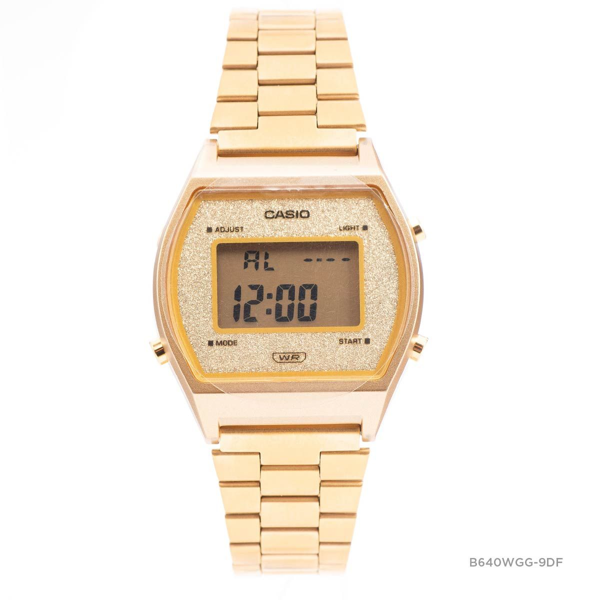
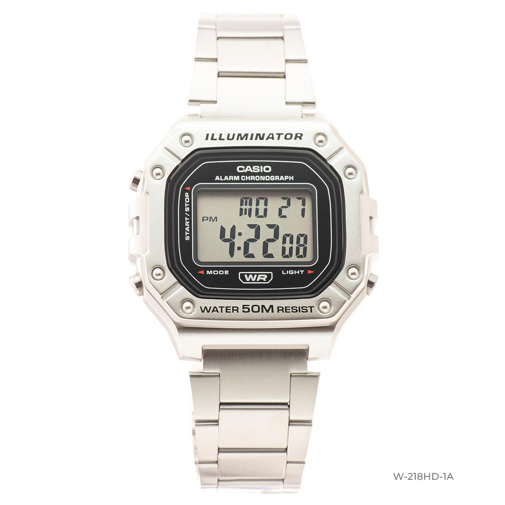

SEIKO S450
Công nghệ P-Light
Công nghệ P-Light
Dòng đồng hồ P-Light sử dụng năng lượng được chuyển hóa từ nhiều nguồn ánh sáng khác nhau.




Công nghệ màn hình điện tử
Sử dụng màn điện tử siêu chất lượng, đủ các tính năng, đơn giản trẻ trung.
Kỹ thuật số hóa, chạy chuẩn tới từng mili giây, một cách mạng số hóa.
Sử dụng pin tái sử dụng.
Khối động cơ V12 mạnh mẽ LaFerrari
Thiết kế tinh xảo để lộ khối động cơ như trong những chiếc LaFerrari mạnh mẽ cùng với công nghệ sử dụng các cánh tua-bin phức tạp chống lại tác động của lực hấp dẫn, bằng cách gắn kết các cơ cấu và bánh răng bên trong môt lồng quay.